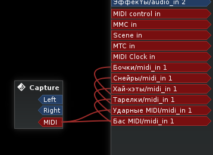

Попробуем подобрать бас, подходящий к нашим бочкам. Используем плагин TAL Noize Mak3r, там есть хороший субосциллятор и хорус. Создадим MIDI-дорожку с ним, и дадим ей имя Бас MIDI.
Подключаем эту дорожку к шине Басы. Матрицу маршрутизации можно вызвать правым щелчком на кнопке выходов линейки микшера новой дорожки.


Вставим также фильтр MIDI-каналов (перед плагином NoizeMak3er), но оставим включенным здесь только первый канал. Выбираем для первый канал для воспроизведения и записи. Дорожку надо подключить ко входу комнаты Claudia Пульт.
Откроем окно NoizeMak3r и пробуем выбрать какой-нибудь из пресетов. Большой список прокручивать мышкой неудобно, но меню, к счастью, реагирует на кнопки Home/End/PgUp/PgDn. Переключать пресеты один за одним можно колёсиком прокрутки при свёрнутом меню.

Пока просто загрузим пресет BS No character bass 5, который позже немного подредактируем. А пока только убавим громкость (ручка Volume) на 6 дБ, чтобы не перегружался микшер. Пока создаётся трек, фейдеры и панораму микшера лучше вообще не трогать, сохранять все значения на нулях. Громкость, если нужно, исправлять в синтезаторах, а микшер оставить в покое до этапа сведения.
Сохраним сессию Ardour и проект Claudia.
Файлы состояния сессии: скачать.